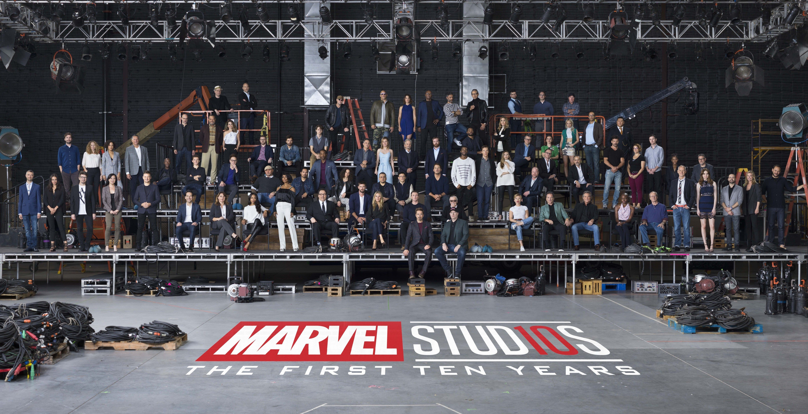

Marvel Studios (conocida como Marvel Films de 1993 a 1996) es un estudio cinematográfico que tiene su sede en los Walt Disney Studios de Burbank (California, Estados Unidos). Dedicado a producir las adaptaciones cinematográficas de Marvel Comics, el estudio ha participado en la producción de tres franquicias de personajes de Marvel que han superado los mil millones de recadudación únicamente en Estados Unidos: X-Men, Spider-Man y las multi-franquicias del Universo cinematográfico de Marvel.

En mayo del año 2018 se cumplieron diez años desde que nació el Universo Cinematográfico de Marvel. Desde el 2008 que se anunció con la escena post-créditos de Iron Man, dando inicio a una de las franquicias más lucrativas y populares de la historia del cine. En la actualidad, el estudio ya cuenta con 23 peliculas, además de tener programada otra nueva fase con mas contenido para los proximos años.
El estudio fue una filial de Marvel Comics hasta que Disney reorganizó las compañías en agosto de 2015, para convertirse en un estudio más de Disney. Marvel Studios ha producido 23 películas desde Iron Man (2008) hasta Spider-Man: Lejos de casa (2019), todas las cuales comparten continuidad con las demás. En conjunto, estos filmes han ingresado más de 22 000 millones de dólares en taquilla en todo el mundo, lo que la convierte en la franquicia de películas que más dinero ha recaudado en toda la historia del cine.
